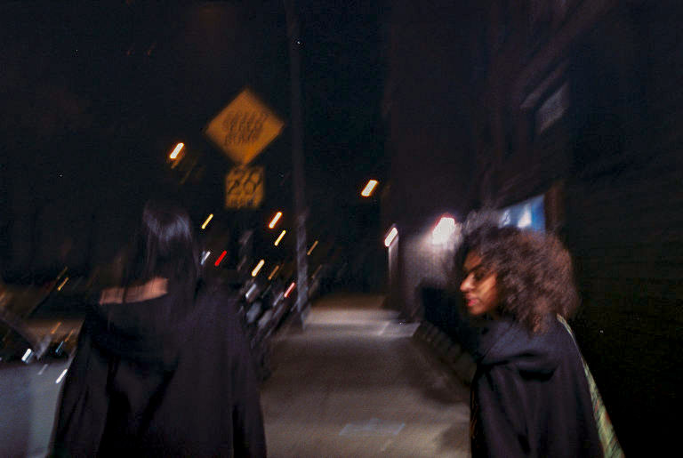
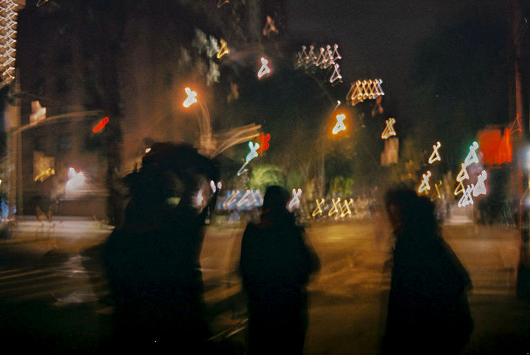

Image: seshwalk 5
Place: 119 9th Ave, New York, NY 10011 40.7432442,-74.0039393
Who: Alana Gerry, Anna Coghlan
ISO and color: ISO 400, Color
date: October 19
quote: “There's like a purpose to what I'm doing. Like it's for something. It's not like, Oh, this is just because it's me and trying to look good. You know?”

Image: seshwalk 3
Place: 119 9th Ave, New York, NY 10011 40.7432442,-74.0039393
Who: Alana Gerry, Anna Coghlan, Hayden Lehr
ISO and color: ISO 400, Color
date: October 19
quote: “We were, uh, hanging out in the park with a bunch of friends. There's some music playing, uh, nearby. It was pretty fun time.”